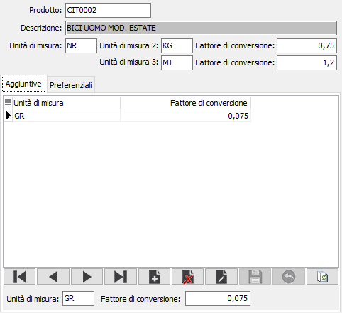
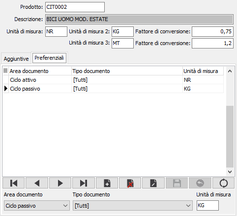

Unità di misura prodotti
La procedura consente di impostare sia le unità di misura preferenziali del prodotto gestite anche dall'anagrafica base, che di inserire ulteriori unità di misura supplementari con relativo fattore di conversione; inoltre è possibile gestire, sempre relativamente al prodotto, l'unità di misura preferenziale differenziata per area di utilizzo. Entrambe queste funzionalità sono configurabili.
Nella parte alta della finestra è presente il prodotto con le tre unità di misura principali ed i relativi fattori di conversione; non è consentito inserire prodotti nuovi, ma è possibile modificare le unità di misura ed i fattori di conversione; sul codice del prodotto è attiva la funzione di ricerca (F9) sull'anagrafica prodotti.
La pagina Aggiuntive, presente se attivo il relativo parametro in configurazione, consente di inserire ulteriori unità di misura e relativo fattore di conversione collegate al prodotto correntemente visualizzato.

La pagina Preferenziali, presente se attivo il relativo parametro in configurazione, consente di configurare l'unità di misura, associata al prodotto correntemente visualizzato, che sarà proposta, al posto di quella primaria, durante l'inserimento dei documenti; la diversificazione può essere effettuata per area di utilizzo distinguendo fra ciclo attivo, ciclo passivo, magazzino, produzione, conto lavoro e tipo documento relativo all'area di utilizzo selezionata o tutti i tipi dell'area.
